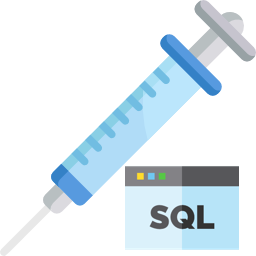

Les différentes attaques que nous pouvons tester dans cette rubrique : Clique ici pour aller vers l'introduction au injection SQL Clique ici pour aller vers l'attaque de Contournement d'un formulaire d'authentification Clique ici pour aller vers l'attaque d'Affichage d'enregistrements Clique ici pour aller vers l'attaque Blind SQL Injection Clique ici pour aller vers l'attaque Total Blind SQL Injection Clique ici pour aller vers l'attaque de la porte d'entrée dérobée Clique ici pour aller vers le script de la base de données utilisée pour les attaques Pour revenir à l'index global